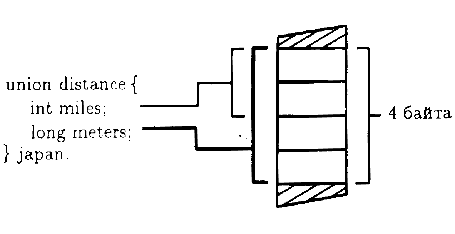

Из урока 18 вы узнали, как группировать связанную информацию в одной переменной с помощью структур C++. По мере усложнения вашим программам могут потребоваться разные способы просмотра части информации. Кроме того, программе может потребоваться работать с двумя или несколькими значениями, используя при этом только одно значение в каждый момент времени. В таких случаях для хранения данных ваши программы могут использовать объединения. В данном уроке вы изучите, как создавать и использовать объединения для хранения информации. Как вы узнаете, объединения очень похожи на структуры, описанные в уроке 18. Прежде чем вы закончите этот урок, вы освоите следующие основные концепции:
Как вы узнаете, объединения очень похожи на структуры C++, однако способ, с помощью которого C++ хранит объединения, отличается от способа, с помощью которого C++ хранит структуры.
Внутри ваших программ объединения C++ очень похожи на структуры. Например, следующая структура определяет объединение с именем distance, содержащее два элемента:
union distance
{
int miles;
long meters;
};
Как и в случае со структурой, описание объединения не распределяет память. Вместо этого описание предоставляет шаблон для будущего объявления переменных. Чтобы объявить переменную объединения, вы можете использовать любой из следующих форматов:
union distance
{
union distance{
int miles; int miles;
long meters; long meters;
} japan, germany, franee;
};
distance japan, germany, franee;
Как видите, данное объединение содержит два элемента: miles и meters. Эти объявления создают переменные, которые позволяют вам хранить расстояния до указанных стран. Как и для структуры, ваша программа может присвоить значение любому элементу. Однако в отличие от структуры значение может быть присвоено только одному элементу в каждый момент времени. Когда вы объявляете объединение, компилятор C++ распределяет память для хранения самого большого элемента объединения. В случае объединения distance компилятор распределяет достаточно памяти для хранения значения типа long, как показано на рис. 19.

Рис. 19. C++ распределяет память, достаточную для хранения только самого большого элемента объединения.
Предположим, что ваша программа присваивает значение элементу miles, как показано ниже:
japan.miles = 12123;
Если далее ваша программа присваивает значение элементу meters, значение, присвоенное элементу miles, теряется.
Следующая программа USEUNION.CPP иллюстрирует использование объединения distance. Сначала программа присваивает значение элементу
miles и выводит это значение. Затем программа присваивает значение элементу meters. При этом значение элемента miles теряется:
#include <iostream.h>
void main(void)
{
union distance{
int miles;
long meters;
} walk;walk.miles = 5;
cout << "Пройденное расстояние в милях " << walk.miles << endl;
walk.meters = 10000;
cout << "Пройденное расстояние в метрах " << walk.meters << endl;
}
Как видите, программа обращается к элементам объединения с помощью точки, аналогичная запись использовалась при обращении к элементам структуры в уроке 18.
Объединение хранит значение только одного элемента в каждый момент времени
Объединение представляет собой структуру данных, которая, подобно структуре C++, позволяет вашим программам хранить связанные части информации внутри одной переменной. Однако в отличие от структуры объединение хранит значение только одного элемента в каждый момент времени. Другими словами, когда вы присваиваете значение элементу объединения, вы перезаписываете любое предыдущее присваивание.
Объединение определяет шаблон, с помощью которого ваши программы могут позднее объявлять переменные. Когда компилятор C++ встречает определение объединения, он распределяет количество памяти, достаточное для хранения только самого большого элемента объединения.
Анонимное объединение представляет собой объединение, у которого нет имени. C++ предоставляет анонимные объединения, чтобы упростить использование элементов объединений, предназначенных для экономии памяти или создания псевдонимов для определенного значения. Например, предположим, что вашей программе требуются две переменные miles и meters. Кроме того, предположим, что программа использует только одну из них каждый данный момент времени. В этом случае программа могла бы использовать элементы объединения, подобного уже обсуждавшемуся объединению distance, а именно name.miles и name.meters. Следующий оператор создает анонимное (безымянное) объединение:
union
{
int miles;
long meters;
};
Как видите, объявление не использует имя объединения и не объявляет переменную объединения. Программа, в свою очередь, может обращаться к элементам с именами miles и meters без помощи точки. Следующая программа ANONYM.CPP создает анонимное объединение, которое содержит элементы miles и meters. Обратите внимание, что программа трактует элементы как обычные переменные. Однако различие между элементами и обычными переменными заключается в том, что, когда вы присваиваете значение любому из этих элементов, значение другого элемента теряется:
#include <iostream.h>
void main(void)
{
union{
int miles;
long meters;
};miles = 10000;
cout << "Значение в милях " << miles << endl;
meters = 150000;
cout << "Значение в метрах " << meters << endl;
}
Как видите, с помощью анонимного объединения, программа может сэкономить память, не используя имя объединения и точку для обращения к значениям элементов.
Анонимные объединения позволяют вашим программам экономить пространство
Анонимное объединение представляет собой безымянное объединение. Анонимные объединения обеспечивают вашим программам способ экономии памяти, и при этом можно не использовать имя объединения и точку. Следующие олераторы определяют анонимное объединение, способное хранить две символьные строки:
union
{
char short_name[13];
char long_name[255];
};
Из этого урока вы узнали, как создать объединение внутри вашей программы. Вы уже поняли, что формат объединения подобен формату структуры. Однако способ, с помощью которого C++ хранит объединения, очень отличается от способа хранения структуры. Из урока 10 вы впервые узнали, что для того, чтобы функция изменила параметр, вашей программе следует передать этот параметр в функцию с помощью указателя (или адреса памяти). Начиная с десятого урока, ваши программы использовали указатели для массивов и символьных строк. В уроке 20 вы рассмотрите операции с указателями C++ с другой стороны. До изучения урока 20 убедитесь, что вы освоили следующее:
- Когда вы объявляете объединение, компилятор C++ распределяет память, достаточную для хранения только самого большого элемента объединения.
- Описание объединения не распределяет память, вместо этого оно обеспечивает шаблон, с помощью которого программы могут позднее объявлять переменные.
- Программы обращаются к элементам объединения, используя точку. Когда ваша программа присваивает значение элементу объединения, то значение, присвоенное, возможно, ранее другому элементу, теряется.
- Анонимное объединение представляет собой объединение, у которого нет имени. Когда программа объявляет анонимное объединение, она может использовать элементы такого объединения подобно любым другим переменным без точки.
Предыдущий урок | Следующий урок